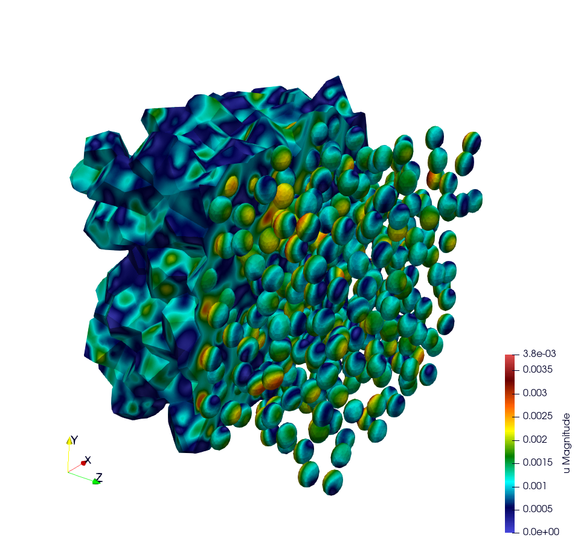

Representative Volume Element of Combustible Mixed Oxides for Nuclear Applications
website: https://github.com/latug0/mfem-mgis-examples/tree/master/ex7
This example models a Representative Volume Element of a mixed oxide fuel under a uniform macroscopic strain. Its results are compared to the ones of Fauque et al. 2021 and Masson et al. 2020, who used an FFT method.
Problem solved
Problem : RVE MOx 2 phases with elasto-viscoplastic behavior laws
Parameters :
start time = 0
end time = 5s
number of time step = 40
Imposed strain tensor :
[ -a/2 , 0 , 0 ]
eps = [ 0 , -a/2 , 0 ] * t
[ 0 , 0 , a ]
with a = 0.012 s^-1
Solver : HypreGMRES
Preconditioner : HypreBoomerAMG
Moduli and Norton behavior law parameters :
[ parameters , matrix , inclusions ]
[ Young Modulus , 8.182e9 , 2*8.182e9 ];
[ Poisson Ratio , 0.364 , 0.364 ];
[ Stress Threshold , 100.0e6 , 100.0e12 ];
[ Norton Exponent , 3.333333 , 3.333333 ];
[ Temperature , 293.15 , 293.15 ];
Element :
- Family H1
- Order 2
The matrix is the material 1 of the meshes. The inclusions are the material 2. Their stress threshold is high enough for them to remain elastic.

Illustration of a RVE with 634 spheres after 5 seconds.
Build the mesh
Two meshes are provided in the mesh directory:
OneSphere.mshis the default mesh. Its spherical inclusion fills 17 % of the volume. Its elements are quadratic tetrahedra.inclusion.mshcontains one inclusion, which fills 11 % of the volume. Its elements are linear tetrahedra.
The meshes are generated with MEROPE and GMSH. MEROPE first generates a
.geo file with the RSA algorithm. Its scripts are in the
script_merope directory:
python3 script_17percent_minimal.py
GMSH then meshes the geometry. The .geo files are in the file_geo
directory:
gmsh -3 OneSphere.geo
Run the simulation
This command runs the default simulation from the build directory:
./mox2 --mesh mesh/OneSphere.msh
Available options
Command line |
Description |
Default |
|---|---|---|
|
Mesh file |
mesh/OneSphere.msh |
|
Number of uniform refinements of the mesh |
0 |
|
Number of time steps. The end time is 5 s. |
40 |
|
Finite element order |
2 |
|
Verbosity level of the linear solvers |
0 |
|
Export or not the results to Paraview |
export |
|
Reference values of the mean stresses in each material |
no comparison |
|
Use PETSc with the given configuration file. It requires MFEM built with PETSc. |
no PETSc |
Examples with other options:
./mox2 -r 2 -o 3 --mesh mesh/OneSphere.msh
mpirun -n 2 ./mox2 --use-petsc --petsc-configuration-file petscrc
Parallel computing mode
The mesh with 634 spheres is not provided. These commands generate it and run the simulation in parallel:
gmsh -3 file_geo/634Spheres.geo
mpirun -n 12 ./mox2 --mesh file_geo/634Spheres.msh
On Topaze, a supercomputer of the CCRT, the commands are:
ccc_mprun -n 8 -c 1 -p milan ./mox2 -r 0 -o 3 --mesh mesh/OneSphere.msh
ccc_mprun -n 2048 -c 1 -p milan ./mox2 -r 2 -o 1 --mesh file_geo/634Spheres.msh
Test
The test runs the default simulation with 5 time steps instead of 40. It
compares the mean stresses in each material to the reference values of
OneSphere-avgStress.ref. With 5 time steps, the average stress SZZ differs
by less than 6 % from the one computed with 40 time steps.
Post-processing of simulation data
The average stress SZZ is compared to the FFT results of Fauque et al. 2021
and Masson et al. 2020. These reference values are in results/res-fft.txt.
The MeanThermodynamicForces post-processing writes the file avgStress.
It gives the mean stresses in each material as a function of time. The
results of mfem-mgis are in the results directory:
res-mfem-mgis.txtgives the average stress SZZ over the RVE ofOneSphere.mshat order 3. It is obtained with the awk command below.res-mfem-mgis-634spheres-o2.txtis theavgStressfile of the RVE with 634 spheres at order 2.
The RVE of OneSphere.msh contains 83 % of matrix and 17 % of inclusion.
This awk command computes its average stress SZZ:
awk '{if(NR>13) print $1 " " 0.83*$4+0.17*$10}' avgStress > res-mfem-mgis.txt
The average stress SZZ at the end of the simulation, at t = 5 s, is:
Simulation |
SZZ in MPa |
|---|---|
FFT, |
93.05 |
|
94.63 |
|
99.87 |
|
140.0 |
634 spheres at order 2, |
101.6 |
At order 1, the average stress is overestimated once the matrix flows. This is consistent with the volumetric locking of linear tetrahedra, since the viscoplastic flow is isochoric.
Display results with gnuplot
gnuplot> plot "res-fft.txt" u 1:10 w l title "fft"
gnuplot> replot "res-mfem-mgis.txt" u 1:2 w l title "mfem-mgis"